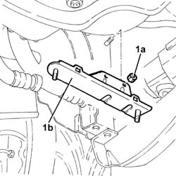

4130B99 Power assisted steering fluid RADIATOR mounting BRACKET - R.R.
- Path
- Procedures > 41 STEERING > 4130 POWER ASSISTED STEERING > 4130B power steering hydraulic sytem > 4130B99 Power assisted steering fluid RADIATOR mounting BRACKET - R.R.
- Kind
- repair procedure (removal / refitting; the operation number is the code)
- Applies to
- engines: 3.2 V6; all production periods
- Interactive page
- https://sloeber94.github.io/elrnDB-a156/en/#/3238156
Applies to: engines: 3.2 V6; all production periods
 Removing
Removing
 Refitting
RefittingPosition the vehicle on the ramp.
Proceed with removal 7055B54 under-engine guard - r r .
Proceed with removal 4130B98 Power assisted steering fluid cooling RADIATOR - R.R. .
1. Undo the nuts (1a) and remove the mounting bracket for the power assisted steering fluid radiator (1b).

Applies to: engines: 3.2 V6; all production periods
Refitting
RemovingPlace the power assisted steering fluid radiator mounting bracket in its housing and secure it using the nuts.
Proceed with refitting 4130B98 Power assisted steering fluid cooling RADIATOR - R.R. .
Proceed with refitting 7055B54 under-engine guard - r r .
Remove the car from the ramps.